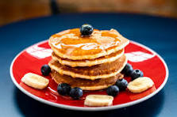

pancake
Home Page

Description
ingredient
- 1 cup flour
- 2 tbsp sugar
- 1 tsp baking powder
- ½ tsp baking soda
- 1 cup buttermilk (or milk + 1 tbsp vinegar)
steps
- Whisk dry ingredients (flour, sugar, baking powder, baking soda, salt)
- Mix wet ingredients (buttermilk, egg, butter, vanilla).
- Combine wet & dry, stir gently (don’t overmix).
- Heat a pan over medium, lightly grease.
- Pour ¼ cup batter per pancake, cook until bubbles form (~2 min).